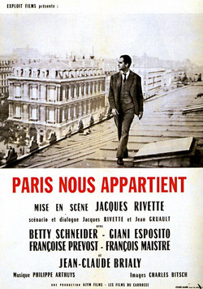

Jacques Rivette
1961
120 minutes
This is an early Jacques Rivette film, with a few twists. Naturally it is a long film that centers heavily around people who are rehearsing for a play (in this case Shakespeare's Pericles) who are also trying to unravel some sort of conspiracy theory, which here seems to be some twist of general anxiety and Cold War paranoia. The film is only 141 minutes, which is extremely short for this director, whose films regularly clock in at three or four hours.
As usual you run to Wikipedia to refresh your memory on what the play is about since it potentially means so much to the characters who are actors in the play in the film. Pericles isn't Shakespeare's best-known play by a long shot, The Shakespeare play has a damned confusing plot which you barely recall. When you lived in Milwaukee, you decided to read your way through every single Shakespeare work, partly as an effort to make up for your engineering-heavy undergraduate education that was rather light in the literature department. You knew that this was an endeavor that would both succeed and fail. The bible literature class that was forced on you in high school required you to read nearly the entirety of the Bible, which was a daunting task that raised more questions than answers. You did not enjoy this at the time, but it ended up being fruitful because it gave you at least a toehold for understanding on biblical topics when they arose in the future. You did the same later in college, choking down the Koran as best you could so you could understand what was and was not in the original book. Both tasks taught you that there's a lot more to either religion than what is contained in the holy book of that religion, and that anyone claiming otherwise in their attacks on or defenses of either religion was essentially naive or a charlatan. It was also humbling. Reading any amount of some book or series of books monumental to civilization does not make you an expert on that topic. It makes you a student of that topic. And reading the entirety of such a corpus makes you a slightly more completist student of that topic.
Understanding anything in this world is all about context since almost everything references something else. James Joyce's Ulysses references The Odyssey. At some point in your life, you've never heard of either work and you've certainly never read either of them. To understand both of these fully, you need to have read both of them. You need to be familiar with The Odyssey to understand the reference, and you need to read Ulysses to understand at least one of the ways in which The Odyssey influenced everything else that came after it. This creates a chicken-or-the-egg problem with much of any field of study--which should you read first? Either way is right or wrong. But once you've read one, you'll be better-equipped to understand the other. And then when you go back and re-read or re-study the first one, you'll have an even clearer understanding of what it was about and how it fits in and is important and influential.
When you read Pericles in Milwaukee, you had never even heard of Jacques Rivette or Paris Nous Appartient. You had no idea you would later watch a film in which actors are rehearsing for this Shakespeare play. And by the time you get around to the latter you have all but forgotten the plot of Pericles and only have the vaguest memory of reading parts of it in your kitchen under a skylight that sometimes rained termites. A Wikipedia refresher reminds you that it's one of his lesser works and that it was likely co-written with a collaborator. It has a winding and confusing rambling plot that involves one prince pursuing different women at different parts of his life, then becoming separated from his wife and newborn daughter. Wander wander wander, blah blah blah, he is eventually reunited with his daughter and his wife, whom he had presumed dead. The bad guys perish and a suitable suitor is found for his daughter. The end.
Very little of this will matter for understanding and enjoying this movie (if possible), but at the end you will find you have matched up one more puzzle piece with another. If someday you were to become a scholar of this film or a Rivette scholar in general, it might be a good idea to go back and give the play a deeper re-read to understand why this play in particular was the one the actors were acting in. It didn't seem to have been picked at random. The Wikipedia page speculates that it is very difficult to stage effectively for various reasons, and suggests that this notorious difficulty in itself is why it was used as a plot element in this particular film.
You grew up as a fan of Mad Magazine and of course later became fairly versed in The Simpsons, both of which did a lot of satire and parodies of things from popular culture. One of your favorite Simpsons gags (from an otherwise minor episode) was when Homer grabs a copy of Paint Your Wagon (featured in Section 77, if you haven't been there yet). Homer and Bart are excited to watch this film since it stars tough guys Clint Eastwood and Lee Marvin, and they ready themselves to watch a blood-soaked violent spaghetti western. Instead they are greeted with a musical theater western full of gleeful showtunes, which is cartoonishly exaggerated for the gag. Homer then declares in frustration, "Ooh, why did they have to screw up a perfectly serviceable wagon story with all that fruity singing?" On initially watching the episode, the viewer who is unfamiliar with the original Paint Your Wagon may not be aware that it is indeed a musical, it does indeed star Clint Eastwood and Lee Marvin, and both of them sing in it. Any viewer who watches Paint Your Wagon or is sufficiently familiar with the details will get that the joke is rooted in reality and not some absurd fictional silliness like the musical version of A Streetcar Named Desire starring Marge and Ned Flanders from a different episode. And anyone who watches the Simpsons parody first can't help but watch Paint Your Wagon without being reminded of the exaggerated version in the cartoon. Watching one of these begs a revisit of the other for someone familiar with both, and thus the work is never done. You've simply built one more link in a vast network for your thoughts to dance around in.
If you want even more things to research to make this film make sense, there are a lot of political references from the Cold War plot that are likely to sail over your head and sink in better for someone who is more up on leftism and modern history. One of the key players in the film is an anti-Franco refugee. Another is an American fleeing McCarthyist red scare nonsense. There are cameos by French New Wave and associated directors Claude Chabrol, Jean-Luc Godard, Jacques Demy, and Rivette himself that you won't recognize or care about unless you are a fan of French New Wave films. This movie may not mean much to you now, but it has a lot of connective tissue that binds it to other stuff you may care about more later. Don't forget it.
Time to choose something different: